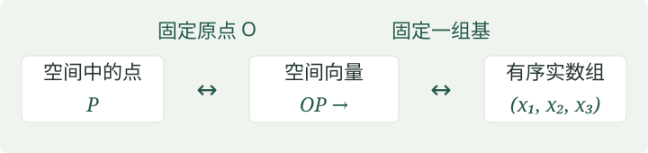

定理 · 向量的基本定理
设 \(\vec e_1,\vec e_2,\vec e_3\) 是三维空间中的三个不共面的向量。对于每个向量 \(\vec a\)，存在唯一的有序实数组 \((x_1,x_2,x_3)\)，使得
\[\vec a=x_1\vec e_1+x_2\vec e_2+x_3\vec e_3.\]
基、坐标与仿射坐标系
这三个向量构成一组基。固定它们的顺序后，系数 \((x_1,x_2,x_3)\) 就是 \(\vec a\) 在该基下的坐标。再指定一个原点 \(O\)，就得到仿射坐标系：
\[[O;\vec e_1,\vec e_2,\vec e_3].\]
点 \(P\) 的坐标定义为 \(\overrightarrow{OP}\) 的坐标。因此，固定坐标系后，“空间中的点”“空间向量”和“\(\mathbb R^3\) 中的有序数组”三者一一对应。

理解“存在”与“唯一”
存在性可以从平行投影理解：把 \(\vec a\) 沿 \(\vec e_3\) 的方向投影到 \(\vec e_1,\vec e_2\) 所在的平面，平面内的部分由前两个向量表示，剩余部分是 \(\vec e_3\) 的倍数。
若同一个向量有两种表示，作差就得到三个基向量的一个零线性组合。它们不共面，因而线性无关，所以各个系数之差都为零。这就说明坐标唯一。